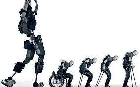

Los humanos tenemos capacidades físicas limitadas que pueden
ser potenciadas gracias a la tecnología. Los exoesqueletos
son estructuras que se pueden “vestir” y que sirven de apoyo
y asistencia para los movimientos, o para aumentar las capacidades del cuerpo humano.
